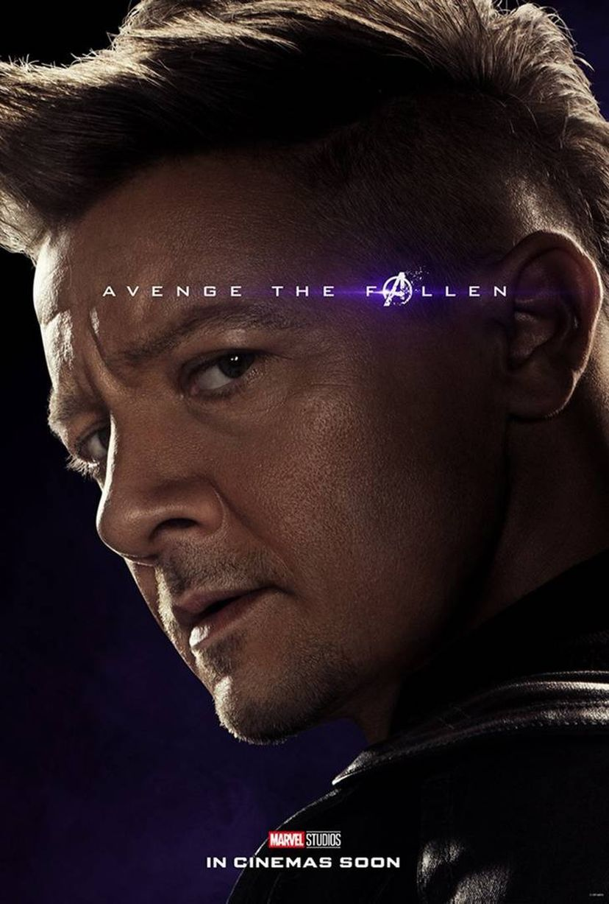

 Um mestre arqueiro trabalhando como agente da S.H.I.E.L.D., Renner disse que era um papel muito físico e que ele treinou fisicamente e praticou tiro ao arco, tanto quanto possível, em preparação. Sobre o papel, Renner disse: "Quando Eu vi o Homem de Ferro, eu pensei que era uma abordagem realmente kick-ass para super-heróis, então eles me disseram sobre esse personagem, e eu gostei de como ele não era realmente um super-herói, ele é apenas um cara com um conjunto de habilidades. Eu poderia ligar para isso". No que diz respeito atirador mentalidade do Gavião, Renner disse: "É um jogo solitário. Sua única conexão é a personagem de Scarlett, Natasha. É como uma coisa da mão direita e da esquerda, eles coexistem, e você precisa de ambos, especialmente quando se trata de uma missão física". Renner disse que o Gavião Arqueiro não é inseguro sobre sua humanidade. "Muito pelo contrário, ele é o único que pode realmente derrubar o Hulk com suas flechas com ponta de tranquilizantes. Ele conhece suas limitações. Mas tem que haver um sentimento de confiança em qualquer super-herói".